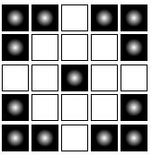
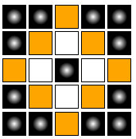
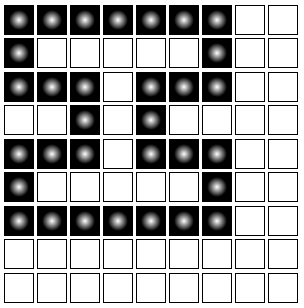
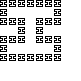
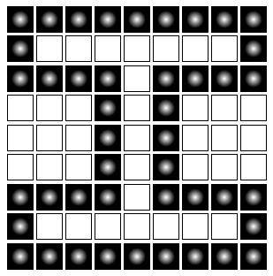
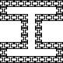
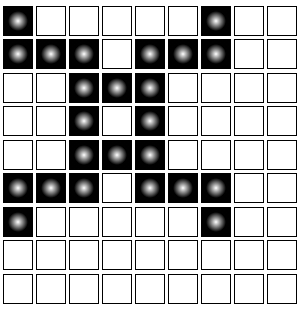
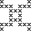
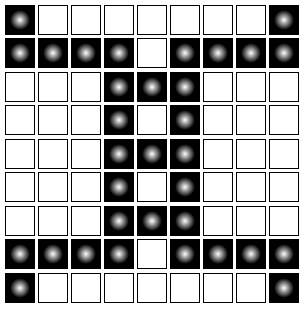
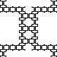

Clicking on one of the squares in the grid will create a filled cell (you can tell this apart from other cells by the white circle in its center, regardless of its color).
Clicking again will turn the cell into a colored cell (the color will be the "click color" you currently have set).
A third click will turn it into an empty cell.
When the grid is fractalized, it will draw the entire grid at every occurence of a filled cell. This basically means it will create a grid of grids, so that this original grid becomes this fractal.

becomes
Any colored cells will be drawn with each grid, but will not affect the shape of the entire fractal. Here, the same original grid is used except with an orange accent to it, and the resulting fractal has the same shape as the non-colored version, but with orange highlights.

becomes
Tips for creating beautiful fractals
1.) Try to reach to the edges of the grid, and center your design.
For example, this grid is uncentered and doesn't reach the edges, and as a result it looks like this, which is unconnected and off-center.

which becomes

However, if the same basic shape is centered and reached to the edges, this is the result.

which becomes

A second example: A simple design uncentered and not reaching the edges:

which becomes

As compared to the same shape, stretched to the edges and centered:

which becomes
